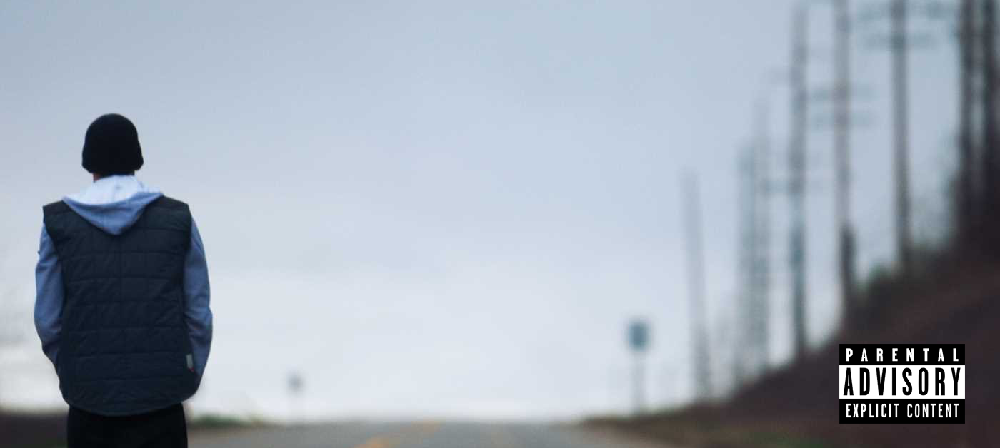

Gallery


|  |
Venom |
Lose Yourself |
Walk on Water |
Текст песни
[Intro]
I got a song filled with shit for the strong-willed
When the world gives you a raw deal
Sets you off 'til you scream, "Piss off! Screw you!"
When it talks to you like you don't belong
Or tells you you're in the wrong field
When something's in your mitochondrial
'Cause it latched on to you, like—
[Verse 1]
Knock knock, let the devil in
Manevolent as I've ever been, head is spinnin'
This medicine's screamin', "L-L-L-Let us in!"
L-L-L-Like a salad bowl, Edgar Allan Poe
Bedridden, shoulda been dead a long time ago
Liquid Tylenol, gelatins, think my skeleton's meltin'
Wicked, I get all high when I think I've smelled the scent
Of elephant manure—hell, I meant Kahlúa
Screw it, to hell with it, I went through hell with accelerants
And blew up my-my-myself again
Volkswagen, tailspin, bucket matches my pale skin
Mayo and went from Hellmann's and being rail thin
Filet-o-Fish, Scribble Jam, Rap Olympics '97 Freaknik
How can I be down? Me and Bizarre in Florida
Proof's room slept on the floor of 'da motel then
Dr. Dre said, "Hell yeah!"
And I got his stamp like a postcard, word to Mel-Man
And I know they're gonna hate
But I don't care, I barely can wait
To hit 'em with the snare and the bass
Square in the face, this fuckin' world better prepare to get laced
Because they're gonna taste my—
[Chorus]
Venom, (I got that) adrenaline momentum
And I'm not knowin' when I'm
Ever gonna slow up and I'm
Ready to snap any moment I'm
Thinkin' it's time to go get 'em
They ain't gonna know what hit 'em
(W-W-When they get bit with the—)
Venom, (I got that) adrenaline momentum
And I'm not knowin' when I'm
Ever gonna slow up and I'm
Ready to snap any moment I'm
Thinkin' it's time to go get 'em
They ain't gonna know what hit 'em
(W-W-When they get bit with the—)
[Verse 2]
I said knock knock, let the devil in
Shotgun p-p-pellets in the felt pen
Cocked, fuck around and catch a hot one
It-it's evident I'm not done
V-Venomous, the thoughts spun
Like a web and you just caught in 'em
Held against your will like a hubcap or mud flap
Beat strangler attack
So this ain't gonna feel like a love tap
Eat painkiller pills, fuck up the track
Like, what's her name's at the wheel? Danica Patrick
Threw the car into reverse at the Indy, a nut crashin'
Into ya, the back of it just mangled steel
My Mustang and the Jeep Wrangler grill
With the front smashed, much as my rear fender, assassin
Slim be a combination of an actual kamikaze and Gandhi (Gandhi)
Translation, I will probably kill us both
When I end up backin' into ya
You ain't gonna be able to tell what the fuck's happenin' to ya
When you're bit with the—
[Chorus]
Venom, adrenaline momentum
And I'm not knowin' when I'm
Ever gonna slow up and I'm
Ready to snap any moment I'm
Thinkin' it's time to go get 'em
They ain't gonna know what hit 'em
(W-W-When they get bit with the—)
Venom, (I got that) adrenaline momentum
And I'm not knowin' when I'm
Ever gonna slow up and I'm
Ready to snap any moment I'm
Thinkin' it's time to go get 'em
They ain't gonna know what hit 'em
(W-W-When they get bit with the—)
[Verse 3]
I said knock knock, let the devil in
Alien, E-E-Elliott phone home
Ain't no telling when this chokehold
On this game will end, I'm loco
Became a Symbiote, so
My fangs are in your throat, ho
You're snake-bitten with my—venom
With the ballpoint pen I'm
Gun cocked, bump stock, double-aught, buckshot
Tire thumper, a garrote, tie a couple knots
Fired up and caught fire, juggernaut
Punk rock, bitch, it's goin' down like Yung Joc
'Cause the Doc put me on like sunblock
Why the fuck not, you only get one shot
Ate shit 'til I can't taste it
Chased it with straight liquor
Then paint thinner, then drank 'til I faint
And awake with a headache
And I take anything in rectangular shape
Then I wait to face the demons I'm bonded to
'Cause they're chasin' me but I'm part of you
So escapin' me is impossible
I latch onto you like a—parasite
And I probably ruined your parents' life
And your childhood too
'Cause if I'm the music that y'all grew up on
I'm responsible for you retarded fools
I'm the super villain Dad and Mom was losin' their marbles to
You marvel that? Eddie Brock is you
And I'm the suit, so call me—
[Chorus]
Venom, (I got that) adrenaline momentum
And I'm not knowin' when I'm
Ever gonna slow up and I'm
Ready to snap any moment I'm
Thinkin' it's time to go get 'em
They ain't gonna know what hit 'em
(W-W-When they get bit with the—)
Venom, (I got that) adrenaline momentum
And I'm not knowin' when I'm
Ever gonna slow up and I'm
Ready to snap any moment I'm
Thinkin' it's time to go get 'em
They ain't gonna know what hit 'em
(W-W-When they get bit with the—)
|
Текст песни
[Intro]
Look
If you had
One shot
Or one opportunity
To seize everything you ever wanted
In one moment
Would you capture it
Or just let it slip?
[Verse 1]
Yo! His palms are sweaty, knees weak, arms are heavy
There's vomit on his sweater already: Mom's spaghetti
He's nervous, but on the surface he looks calm and ready
To drop bombs, but he keeps on forgetting
What he wrote down, the whole crowd goes so loud
He opens his mouth, but the words won't come out
He's choking, how? Everybody's joking now
The clock's run out, time's up, over—blaow!
Snap back to reality, ope there goes gravity, ope
There goes Rabbit, he choked, he's so mad but he won't
Give up that easy, no, he won't have it, he knows
His whole back's to these ropes, it don't matter, he's dope
He knows that but he's broke, he's so stagnant, he knows
When he goes back to this mobile home, that's when it's
Back to the lab again yo, this whole rhapsody
Better go capture this moment and hope it don't pass him, and
[Chorus]
You better lose yourself in the music
The moment, you own it, you better never let it go
You only get one shot, do not miss your chance to blow
This opportunity comes once in a lifetime, yo
You better lose yourself in the music
The moment, you own it, you better never let it go
You only get one shot, do not miss your chance to blow
This opportunity comes once in a lifetime, yo
You better…
[Verse 2]
His soul's escaping through this hole that is gaping
This world is mine for the taking, make me king
As we move toward a New World Order
A normal life is boring; but superstardom's
Close to post-mortem, it only grows harder
Homie grows hotter, he blows, it's all over
These hoes is all on him, coast-to-coast shows
He's known as the Globetrotter, lonely roads
God only knows, he's grown farther from home, he's no father
He goes home and barely knows his own daughter
But hold your nose, 'cause here goes the cold water
These hoes don't want him no mo', he's cold product
They moved on to the next schmoe who flows
He nose-dove and sold nada, and so the soap opera
Is told, it unfolds, I suppose it's old, partner
But the beat goes on: da-da-dom, da-dom, dah-dah, dah-dah
[Chorus]
You better lose yourself in the music
The moment, you own it, you better never let it go
You only get one shot, do not miss your chance to blow
This opportunity comes once in a lifetime, yo
You better lose yourself in the music
The moment, you own it, you better never let it go
You only get one shot, do not miss your chance to blow
This opportunity comes once in a lifetime, yo
You better…
[Verse 3]
No more games, I'ma change what you call rage
Tear this motherfuckin' roof off like two dogs caged
I was playin' in the beginning, the mood all changed
I've been chewed up and spit out and booed off stage
But I kept rhymin' and stepped right in the next cypher
Best believe somebody's payin' the Pied Piper
All the pain inside amplified by the
Fact that I can't get by with my nine-to-
Five and I can't provide the right type of life for my family
'Cause man, these goddamn food stamps don't buy diapers
And there's no movie, there's no Mekhi Phifer, this is my life
And these times are so hard, and it's gettin' even harder
Tryna feed and water my seed, plus teeter-totter
Caught up between bein' a father and a prima donna
Baby mama drama, screamin' on her, too much for me to wanna
Stay in one spot, another day of monotony's
Gotten me to the point I'm like a snail, I've got
To formulate a plot or end up in jail or shot
Success is my only motherfuckin' option—failure's not
Mom, I love you, but this trailer's got
To go; I cannot grow old in Salem's Lot
So here I go, it's my shot: feet, fail me not
This may be the only opportunity that I got
[Chorus]
You better lose yourself in the music
The moment, you own it, you better never let it go
You only get one shot, do not miss your chance to blow
This opportunity comes once in a lifetime, yo
You better lose yourself in the music
The moment, you own it, you better never let it go
You only get one shot, do not miss your chance to blow
This opportunity comes once in a lifetime, yo
You better…
|
Текст песни
[Chorus: Beyoncé & Eminem]
I walk on water
But I ain't no Jesus
I walk on water
But only when it freezes (Fuck)
[Verse 1: Eminem]
Why are expectations so high? Is it the bar I set?
My arms, I stretch, but I can’t reach
A far cry from it, or it's in my grasp, but as
Soon as I grab, squeeze
I lose my grip like the flying trapeze
Into the dark I plummet, now the sky's blackening
I know the mark’s high, butter–
flies rip apart my stomach
Knowin' that no matter what bars I come with
You're gonna harp, gripe, and
That's a hard Vicodin to swallow, so I scrap these
As pressure increases like khakis
I feel the ice cracking, because—
[Chorus: Beyoncé & Eminem]
I walk on water
But I ain't no Jesus
(It's the curse of the— it's the curse of the—)
I walk on water (Shit)
But only when it freezes
[Verse 2: Eminem]
It's the curse of the standard
That the first of the Mathers disc set
Always in search of the verse that I haven’t spit yet
Will this step just be another misstep
To tarnish whatever the legacy, love or respect
I’ve garnered? The rhyme has to be perfect, the delivery flawless
And it always feels like I'm hittin’ the mark
'Til I go sit in the car, listen and pick it apart
Like, "This shit is garbage!"
God's given me all this, still I feel no different regardless
Kids look to me as a god, this is retarded
If only they knew, it's a facade and it’s exhaustive
And I try not to listen to nonsense
But if you bitches are tryin' to strip me of my confidence
Mission accomplished
I'm not God-sent, Nas, Rakim, 'Pac, B.I.G., James Todd Smith
And I'm not Prince, so…
[Chorus: Beyoncé & Eminem]
I walk on water
But I ain't no Jesus
I walk on water
(It's true, I'm a Rubik's— it's true—)
But only when it freezes
(It's true—)
[Post-Chorus: Beyoncé]
'Cause I'm only human, just like you
Making my mistakes, oh if you only knew
I don't think you should believe in me the way that you do
'Cause I'm terrified to let you down, oh
[Verse 3: Eminem]
It's true, I'm a Rubik's—a beautiful mess
At times juvenile, yes, I goof and I jest
A flawed human, I guess
But I'm doin' my best to not ruin your ex–
pectations and meet 'em, but first
The "Speedom" verse, now Big Sean
He's goin' too fast, is he gonna shout or curse out his mom?
There was a time I had the world by the balls, eatin' out my palm
Every album song I was spazzin' the fuck out on
And now I'm gettin' clowned and frowned on
But the only one who's looking down on
Me that matters now's DeShaun
Am I lucky to be around this long?
Begs the question though
Especially after the methadone
As yesterday fades and the Dresden home
Is burnt to the ground and all that's left of my house is lawn
The crowds are gone
And it's time to wash out the blonde
Sales decline, the curtain's drawn
They're closin' the set, I'm still pokin' my head from out behind
And everyone who has doubt, remind
Now take your best rhyme, outdo it, now do it a thousand times
Now let 'em tell ya the world no longer cares
Or gives a fuck about your rhymes
And as I grow outta site, outta mind, I might go outta mine
'Cause how do I ever let this mic go without a fight
When I made a fuckin' tightrope outta twine?
But when I do fall from these heights though, I'll be fine
I won't pout or cry or spiral down or whine
But I'll decide if it's my final bow this time around, 'cause—
[Chorus: Beyoncé]
I walk on water
But I ain't no Jesus
I walk on water
But only when it freezes
[Post-Chorus: Beyoncé]
'Cause I'm only human, just like you
I've been making my mistakes, oh if you only knew
I don't think you should believe in me the way that you do
'Cause I'm terrified to let you down, oh
If I walked on water, I would drown
[Outro: Eminem]
'Cause I'm just a man
But as long as I got a mic, I'm godlike
So me and you are not alike
Bitch, I wrote "Stan"
|
Cписок альбомов Eminema
|
Marshall Bruce Mathers IIISlim Shady - американский рэпер, музыкальный продюсер, композитор и актёр.Эминем является основателем независимой некоммерческой радиостанции Shade 45, транслирующей хип-хоп. На счету американского рэпера, продюсера, композитора и актера 15 премий «Грэмми» и «Оскар». MTV отдал Эминему 9-е место в списке «Самые великие MC за все время» и 13-е в списке «22 самых великих голоса в музыке». В августе 2018 года Эминем записал куплет для трека Majesty певицы Ники Минаж, в котором побил свой же рекорд по скорости читки. Куплет в Majesty насчитывает 123 слога и длится около 12 секунд, то есть скорость читки составляет 10,3 слога в секунду. Предыдущим рекордом исполнителя был отрывок из трека Rap God, где рэпер произнес 157 слогов за 16,3 секунды — скорость составила 9,6 слога в секунду. При этом Rap God до сих пор занесен в Книгу рекордов Гиннесса за самое большое количество слов в хит-сингле — их там 1560. Маршалл Брюс Мэтерс-третий родился в провинциальном местечке Сент-Джозеф штата Миссури 17 октября 1972 года. День появления на свет будущей звезды рэпа пришелся на знак зодиака Весы. В жилах Эминема течет шотландская, английская, немецкая, швейцарская и польская кровь.На данный момент ему 46 лет. Жизнь научила его терпеть трудности и много работать. Эминем понял, что хочет в музыке найти себя и свой стиль. Где-то глубоко в душе он осознал своё предназначение, и инстинкт его не подвёл. Волевыми усилиями и сильным желанием добиться успеха, Эминем решил продолжать своё творчество. Эминем один из самых просматриваемых артистов на YouTube. У него больше 8,9 миллиарда просмотров музыкальных клипов на официальной странице Vevo. Также он стал первым рэпером и третьим человеком, набравшим более 1 000 000 000 просмотров на YouTube, с клипами песен "Love The Way You Lie" и "Not Afraid". Также в 2008 году он был назван журналом Vibe лучшим рэпером. А в декабре 2009-го Эминем был назван журналом Billboard артистом десятилетия.Согласно Billboard, два альбома Эминема находятся в пятёрке самых продаваемых альбомов 2000-х (десятилетия). Только в Великобритании Эминем продал 12,5 миллионов пластинок. Также он продал больше 33 миллионов цифровых песен и 40,9 миллиона цифровых альбомов только в США. |
|
|